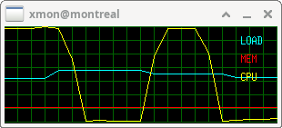
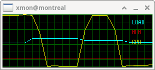
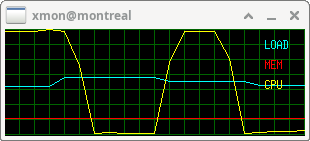

 Abstract
Xmon is a minimalistic lightweight system
performance monitor for Linux. It visualizes real-time system
load, memory usage, and CPU activity. The tool operates by reading
data directly from the Linux process filesystem (/proc), which
must be mounted for the application to function.
* CPU Usage [CPU]:
Total processor utilization (central parallel unit usage)
* Memory [MEM]:
Current RAM consumption (used memory)
* System Load [LOAD]:
Standard Linux load average (load average)
As of Feb 2026 with release 0.0.4b, a minor vibe code
modernization has been applied in order to brush-up the code and
make it work with any modern Linux kernels and X11 environments,
tested using most recent Debian SID (Feb 26). All features were
hardcoded, command-line options are not supported. While the
interface is designed to be self-explanatory, obviating the need
for a manpage, please note that active development has concluded.
Xmon was the result of a single-day Xlib API deep dive in 1998
when I was a student, consequently, the codebase is in a beta
state, largely unoptimized, and may contain bugs. A workaround for
memory overflows has been included.
While not portable to other Unix
derivatives like Solaris or AIX, it is compatible with any
hardware (such as Sun or RS/6000) running a Linux environment. I
am releasing the source code under the GNU GPL in the hope that
it's useful for your daily use.
Installation

$Id: xmon.html,v 1.25 2026/02/19 13:52:42 gloor Exp $ |